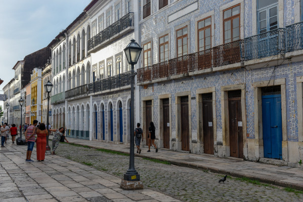

Sobre o Maranhão
Maranhão é uma das 27 unidades Federativas do Brasil, localizado na região nordeste do pais, o estado apresenta enorme diversidade de fauna e flora com seus mais diversos biomas, possuindo como marca registrada a transição entre o sertão nordestino e a Amazônia.
Terra marcada pelo ritmo do reggae, a influência cultural dos povos Africanos não se passa desapercebida, desde comidas típicas a arte e cultura.
Considerada por muitos historiadores um dos principais estados durante a colinização do Brasil, o Maranhão apresenta diversos pontos históricos e marcantes sendo sua capital considerada patrimônio cultural da Humanidade.
Ficou curioso e quer saber um pouquinho mais sobre o estado? Se aventure nesse site e descubra cada vez mais sobre esse maravilhoso estado.
Mapa
Conheça um pouco sobre a geografia do estado e seus municípios através do mapa.
Vista Aérea
Vista Aerea da capital do estado, com seu centro historico, Patrimonio da humanidade